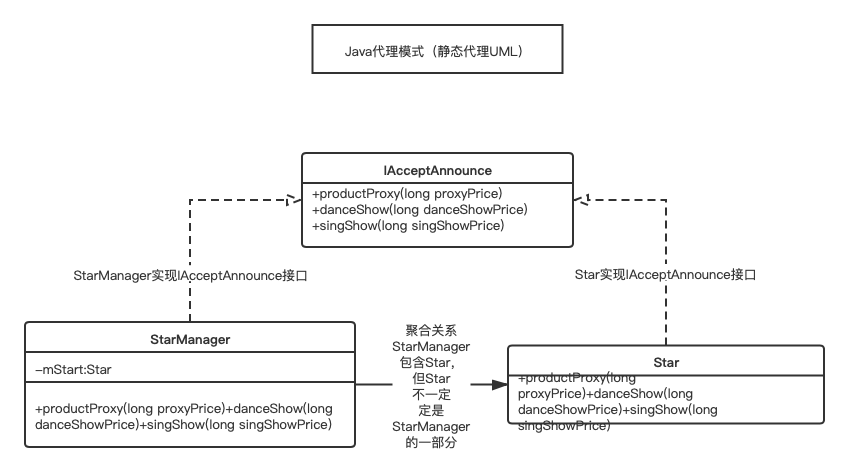

模式定义
给某一个对象（源对象）提供一个代理对象，对这个对象（源对象）的访问都通过这个代理对象来进行。这样的话对源对象的访问都可以通过代理对象来进行，代理对象可以在不改变源对象的基础上，控制对这个源对象的访问。这类似于明星（源对象）和明星经纪人（代理对象）的关系。某公司想请某明星A做形象代言人，于是就找到了明星A的经纪人B，B若代言费用合理，就允许其代言，不合理就不为其代言。隔离了外界对明星A的干扰。
代理实现方式
代理模式主要分三种：静态代理、动态代理和Cglib代理。
- 静态代理，为代理的类在额外写一个类（或者用工具生成一个类），这个类实现了被代理的类的所有功能。这就导致了要为一个对象设置代理对象，必须就在对象类的基础上再写一个类，显得不够灵活；
- 动态代理，动态代理实际上是程序在运行中，根据被代理的接口来动态生成代理类的class文件，并加载class文件运行的过程。由于动态生成的类已经继承了Proxy这个类，就不能在继承其他类了，从而只能通过接口的方式来实现了。（Java是单继承，多实现的）
- Cglib代理，通过为被代理的类生成一个子类并重写被代理的方法实现代码的动态植入，因此，Cglib无法代理被
final修饰的类或方法以及静态方法。
代理模式Demo示例
当然，明星A和他的经纪人B必须有一些一致性约定，经济人B必须知道明星A的一些原则（愿意代言什么类型的，愿意接什么类型的通告），所以A和B必须实现相同的接口。下面看看具体实现。
先定义A和B的一致性协定（两者都要实现的接口）
1 | /** |
再定义明星（源对象）A
1 | /** |
然后定义经纪人（代理对象）B，经纪人是可以直接联系他的明星的，所以B会持有A的引用，并且他还知道A会接受什么类型的通告
1 | ** |
再来写一个模拟调用的StartClient
1 | /** |
Star和StarManager约定好通告的标准后，Star就不用关心具体接通告的事情了，而是交给StarManager来处理。这就是代理模式。
上面的这种事静态代理，它对Star和StarManager的要求较高，两个人必须都清楚的知道通告的标准（即实现IAcceptAnnounce接口，否则就会出现不和谐的情况）
静态代理
静态代理定义：代理对象持有被代理对象的引用，并且和代理对象实现了相同的接口，一切对被代理对象实现的接口方法的访问都通过代理对象来实现。
动态代理
动态代理实际上是程序在运行中，根据被代理的接口来动态生成代理类的class文件，并加载class文件运行的过程。
1 | /** |
改写上面的StarClient如下：
1 | /** |
Java动态代理的基础是反射，使用动态代理的好处：
- 减少了编程的工作量，如果需要实现多种代理处理逻辑，只需要写多个InvocationHandler即可，而不必写多个代理类；
- 系统的扩展性和可维护性增强，通常只需要修改代理处理器的处理逻辑即可。
使用动态代理要注意：被代理的对象必须要实现接口，代理对象不需要实现接口。
利用下面方法可以查看动态代理生成的代码
1 | /** |
在main方法中调用writeClassToDisk("./Proxy4.class") 后就可以在项目根目录看到Proxy4.class文件了
Cglib代理
Cglib即 Code Generation Library ，是一款开源的动态代理库，与JDK动态代理基于接口的代理机制不同，Cglib通过为被代理的类生成一个子类并重写被代理的方法实现代码的动态植入，因此，Cglib无法代理被final修饰的类或方法以及静态方法。
Cglib代理示例
1 | /** |
模式类图
这里的类图值得是静态代理的类图。

总结
代理模式时Java中很常见的模式，很多成熟的框架都应用该模式如AOP，Retrofit等，它允许在不修改被代理对象的情况下对代理对象进行一些扩展。
相关参考
Idea 如何让一个module支持maven？
新建一个pom.xml文件，然后直接在该文件上右键，选择 Add as maven project即可，这个pom.xml文件需要符合maven项目文件的一般格式。
Cglib的使用？
Cglib可实现代理，它与Java本身支持的动态代理不同，Java本身的代理要求被代理的对象必须实现一个或多个接口，Cglib没有这个要求，他可以代理普通对象。它的限制是不能代理final修饰的对象或方法（因为它是通过编写一个被代理类的子类来实现的，如果被代理的类或方法被final所修饰，则Cglib无法代理）
ASM的概念？
ASM请参考官网